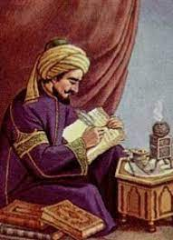

Kindî
| Kindî | |
|---|---|
|  | |
| Doğum | Ebu Yusuf Yakub bin İshak el-Sebbah el-Kindi 801 |
| Ölüm | 873 (72 Yaşlarında) Bağdat, Irak |
| Milliyet | Arap |
| Vatandaşlık | Abbasi Devleti |
| Dalı | \Felsefe, Matematik, Fizik, Kimya, Psikoloji, Farmakoloji, Tıp, Kozmoloji, Müzik, Astronomi |
Kindî veya tam adıyla Ebu Yusuf Yakub bin İshak el-Sebbah el-Kindî (Arapça: أبو يوسف يعقوب بن إسحاق الصبّاح الكندي; d. 801, Basra - ö. 873, Bağdat), felsefe, tıp, matematik astronomi, ilahiyat, psikoloji, fizik, kimya ve müziğe kadar pek çok bilim dalında eser yazan Arap bilim insanı.
Abbasi halifelerinden özel ilgi ve destek gören Kindî, astronom ve astrolog olarak sarayda müneccimlik görevini de yürüttü. Ayrıca halife Mu'tasım'ın oğlu Ahmed'in eğitimini üstlendi. Kindî eserlerinin önemli bir kısmını aralarında hoca-talebe ilişkisinin ötesinde dostluğa dayanan bir yakınlık bulunan bu veliahdın isteği üzerine kaleme almış ve eserlerini de bu veliahda ithaf etmiştir. Orta Çağ Avrupası'nda "Alkindus" adıyla tanınan, ilk İslam filozofudur. Felsefesinde, Platon, Aristoteles ve Plotinus'un görüşlerinin bir sentezini yapmıştır. Felsefenin yönteminin kanıtlama, kanıtlamanın hedefinin maddeye biçim kazandıran özleri bilmek, felsefenin amacının ise Tanrı'ya erişmek olduğunu öne süren Kindî'ye göre, felsefi bilginin ilk basamağı akıl yürütmedir. İnsanın akıl yürütme yoluyla adım adım basitten bileşiğe ve en yetkin olana doğru yükseldiğini öne süren filozof, varlığa akılcı bir açıdan yaklaştığı için, Tanrı'nın özüne ait sıfatları inkar etmiştir. Tanrı'nın sıfatlarının ancak olumsuz bir biçimde bilinebileceğini savunan El-Kindî'ye göre, Tanrı mutlak Bir'dir. Mutlak varlık olması nedeniyle, Mutlak Bir'in şekli, niteliği, niceliği, maddesi yoktur ve O göreli bir varlık değildir.
Soylu bir ailenin çocuğu olarak Kûfe'de doğdu. Dedesi Eş'as, Güney Arabistan'ın en büyük kabilelerinden biri olan Kinde'nin hükümdarıydı. Müslüman olduktan sonra kabilesinin ileri gelenleriyle Kûfe'ye yerleşmişti. Babası İshak b. es-Sabbah yıllarca Kûfe valiliği yaptı.
Kindî'nin doğum tarihi gibi ölüm tarihi konusunda net bir bilgi yoktur. Filozofun öldüğü tarih olarak 860, 869, 870 ve 873 gibi farklı tarihler ortaya çıkıyorsa da Mustafa Addurrâzık bazı gerekçeler göstererek Kindî'nin 866 tarihinde ölmüş olabileceğini belirtmiştir. Kimi kaynaklarda ölüme sebep olan hastalıkların olduğu ve filozofun kronik romatizmal rahatsızlığından dolayı vefat etmiş olabileceğini söylemektedirler.
Küçük yaşta babasını yitirdi. Çocukluk ve ilk gençlik yılları Kûfe ve Basra'da geçen Kindî, geleneksel temel eğitimden sonra dil ve edebiyat alanında eğitim gördü. Halife Me'mun'un 830'da kurduğu Beytü'l-hikme'deki bilginler topluluğu arasında yer aldı. Mutezili devlet yöneticilerinden destek gören Kindî Ehl-i Sünnet yanlısı Mütevekkil-Alellah'ın iktidarında saraydan uzak kaldı.
Kindî felsefeden tıbba, matematikten astronomiye, ilahiyattan siyasete, psikolojiden diyalektiğe, astrolojiden kehanete ve optikten kimyaya kadar yirmi ayrı dalda eser vererek sayıları 277'yi bulan bir külliyat oluşturmuştur.
Akla büyük bir yer veren Meşşaîlik felsefesini ilk başlatan kişi de olan Kindî'nin 17 eseri Latinceye, 4'ü İbraniceye tercüme edilmiştir. Mekân ve hareketin izafi olduğun-u, zamanın cisim ve hareketten ayrı düşünülemeyeceğini söylemiştir. "Yavaş dediğimiz şey, uzun zaman içinde belli bir mesafenin kat edilmesidir. Hızlılık ise kısa zaman içinde aynı mesafenin kat edilmesidir"
Kindî, kriptoloji biliminde Jül Sezar (MÖ 50) tarafından bulunan ve uygulanan tek alfabeli yerine koyma şifreleme yöntemini geliştirerek frekans analizini bulan ilk kişidi
Hayatı
Kindî, Kinde kabilesinin büyüklerinden birinin evinde dünyaya geldi. İlk öğrenimini Kinde kabilesinin reisi olan babasından tamamladı. Sonra Bağdat'a gitti. Halife Memun ve Mutasım (Abbasi)'in dikkatini çekti ve Memun onu Beyt'ül Hikmet'e yönetici olarak atadı. Kindi'nin atanma nedeni, Bağdat'ta Eski Yunan Felsefesinden ve ilmi metinlerden yaptığı tercümelerdir. Kindî aynı zamanda güzel hitabeti ile de bilinir. Hatta Halife Mütevekkil (Abbasi) onu özel hatibi olarak seçmiştir.
Mutasım (Abbasi) kardeşi Memun yerine hilafete gelince, Kindî'yi çocuklarının eğitmeni olarak görevlendirmiştir. Ancak, Kindî, Beyt'ül Hikmet'te kalmak istemiştir. Bu olayın birçok yorumu vardır. Bazıları, bu durumu Beyt'ül Hikmet de olan rekabete yorumlasa da, bazıları bunu Kindî'nin din konusunda daha çok ihtisas yapması olarak yorumlamıştır hatta bu yüzden Kindî birtakım sıkıntılar ile karşılaşmış ve bir dönem yazıtlarına el koyulmuştur. Henry Corbin -İslami konular araştırmacısı- Kindî'nin Mutasım (Abbasi) döneminde Bağdat'ta Hicri 259 (Miladi 873) yılında tek başına öldüğini söylemiştir.
Ölümünden sonra, Kindî'nin felsefe alanında birçok çalışması yok olmuştur ya da kaybolmuştur. Felix Klein Franke, bunun birçok nedeni olduğunu söylemiş, bunlar; Din alanında sert eleştirileri ile dikkat çekmesi, bir diğer sebep ise Moğolların Bağdat'ı istilası sırasında bu eserleri yok etmesi, bu sebeplere ek olarak, büyük ihtimal doğrultunda yazıtlarının kendinden sonra gelen meşhur Farabi ve İbn-i Sina gibi filozoflar tarafından kabul görmemesi olarak yorumlamıştır.
Bilime Katkıları
Kindî, düşünce alanından başka konularda da alim bir kişiydi. Farabi ve İbn-i Sina'nın çalışmalarına rağmen, kendisi de yaşadığı asrın Büyük Müslüman Filozofları arasında sayılmıştır. Tarihçi İbnünnedim Fihrist (Katalog) adlı kitabında ondan bahsetmiştir. Aynı şekilde Rönesans dönemi İtalyan araştırmacı Gerolamo Cardano ondan şöyle bahsetmiştir;" Orta Çağ'ın en büyük on iki akıl bilimcisinden biridir.
Astronomi
Kindî, Batlamyus'un "Güneş Sistemi" teorisini desteklemiştir. Bu teori; Dünyanın değişik sistemlerin merkezi olduğu ve bilinen gezegenler; Ay, Merkür, Mars, Venüs, Güneş, Jüpiter'in bu yörüngede döndüğünü söyler. Kindî bu teori hakkında; " Rasyonel varlıklar bir yörünge içerisinde döner, dönüşü ise Allah'a itaati ve ona boyun eğmesi şeklinde olur." Ancak ne var ki bu sözü, semai varlıkların etkisinin maddi dünyaya tesiri ile bir gizem haline gelmiştir.
Ancak Kindî, ruhsal varlıklar tarafından gerçek dünyaya tesirinin nasıl olduğu konusunda belirsizliğe düşmüştür. Kindî, Aristo'dan esinlendiği bir teoride, bu cisimlerin hareketleri ayın alt bölümünde sürtünmeye neden olduğu ve ilk aşamada toprak, ateş, su ve havayı oluşturdu düşünülen bu teoride, bu birleşmenin maddi dünyada her şeyi ürettiğini tasarlamaktadır.
Kindî astronomi konusundaki açık düşüncelerini, içerisinde soruların ve cevapların, "Hava değişimi", "Güneş Tutulması", "Yıldızların Işınları" tezlerinin bulunduğu 40 bölümden oluşan "Yıldızlardaki Kanun" adlı kitabında toplamıştır.
Popüler kültürdeki yeri
Ubisoft'un yapımcılığını üstlendiği Assassin's Creed: Revelations adlı oyunda Pîrî Reis, donanma için çalışan ve suikastçı birliğinin üyesi olan önemli bir karakter olarak oyuna eklenmişti. Ayrıca Pîrî Reis, bu oyunda bomba yapımında usta biri olarak dünyaya tanıtılmıştı.
Eserleri
- Risale fil Akl Manaslk
- Risale fi Mahiyyetin Nevmi ver hayali beser.
- Risale fil Cevahiril Hamse.
- Risale fil illetis Selci vel Berdi vel Berki ves Savaiki ver Radi vez Zemherir.
- Risale fiş Şubat.
- Risale fi Vel Elel Hesana İhtiyaratil Eyyam.
- De İntellecto Secondum Aristoteles et Platonem.
- Risale fi İhtilafil Manazır.
- Fi Marifeti Kuval Edviyetil Murekkebe.
- Risale fi'l-İlleti'i-Levni'l-Lazeverdi
- Risale fi´l-hile li-def´i´l-ahzan.
- Risaletü Eflatun ila Furfuriyus fi hakikati nefyi´l-hem.